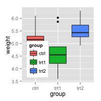

Legends (ggplot2)
- Legends (ggplot2)
- Problem
- Solution
- Removing the legend
- Changing the order of items in the legend
- Reversing the order of items in the legend
- Hiding the legend title
- Modifying the text of legend titles and labels
- Modifying the appearance of the legend title and labels
- Modifying the legend box
- Changing the position of the legend
- Hiding slashes in the legend
- Notes
This page was recently updated to reflect changes in the new version of ggplot2, 0.9.3. See Installing and using packages to make sure you have the latest version of ggplot2.
Problem
You want to modify the legend of a graph made with ggplot2.
Solution
Start with an example graph with the default options:
library(ggplot2) bp <- ggplot(data=PlantGrowth, aes(x=group, y=weight, fill=group)) + geom_boxplot() bp
/bp.png)
Removing the legend
Use guides(fill=FALSE), replacing fill with the desired aesthetic.
You can also remove all the legends in a graph, using theme.
# Remove legend for a particular aesthetic (fill) bp + guides(fill=FALSE) # It can also be done when specifying the scale bp + scale_fill_discrete(guide=FALSE) # This removes all legends bp + theme(legend.position="none")
Changing the order of items in the legend
This changes the order of items to trt1, ctrl, trt2:
bp + scale_fill_discrete(breaks=c("trt1","ctrl","trt2"))
Depending on how the colors are specified, you may have to use a different scale, such as
scale_fill_manual, scale_colour_hue, scale_colour_manual, scale_shape_discrete, scale_linetype_discrete, and so on.
Reversing the order of items in the legend
To reverse the legend order:
# These two methods are equivalent: bp + guides(fill = guide_legend(reverse=TRUE)) bp + scale_fill_discrete(guide = guide_legend(reverse=TRUE)) # You can also modify the scale directly: bp + scale_fill_discrete(breaks = rev(levels(PlantGrowth$group)))
Instead of scale_fill_discrete, you may need to use a different scale, such as scale_fill_manual, scale_colour_hue, scale_colour_manual, scale_shape_discrete, scale_linetype_discrete, and so on.
Hiding the legend title
This will hide the legend title:
# Remove title for fill legend bp + guides(fill=guide_legend(title=NULL)) # Remove title for all legends bp + theme(legend.title=element_blank())
Modifying the text of legend titles and labels
There are two ways of changing the legend title and labels. The first way is to tell the scale to use have a different title and labels. The second way is to change data frame so that the factor has the desired form.
Using scales
The legend can be a guide for fill, colour, linetype, shape, or other aesthetics.
With fill and color
Because group, the variable in the legend, is mapped to the color fill, it is necessary to use scale_fill_xxx, where xxx is a method of mapping each factor level of group to different colors. The default is to use a different hue on the color wheel for each factor level, but it is also possible to manually specify the colors for each level.
bp + scale_fill_discrete(name="Experimental\nCondition") bp + scale_fill_discrete(name="Experimental\nCondition", breaks=c("ctrl", "trt1", "trt2"), labels=c("Control", "Treatment 1", "Treatment 2")) # Using a manual scale instead of hue bp + scale_fill_manual(values=c("#999999", "#E69F00", "#56B4E9"), name="Experimental\nCondition", breaks=c("ctrl", "trt1", "trt2"), labels=c("Control", "Treatment 1", "Treatment 2"))
Note that this didn't change the x axis labels. See Axes (ggplot2) for information on how to modify the axis labels.
If you use a line graph, you will probably need to use scale_colour_xxx and/or scale_shape_xxx instead of scale_fill_xxx. colour maps to the colors of lines and points, while fill maps to the color of area fills. shape maps to the shapes of points.
We'll use a different data set for the line graphs here because the PlantGrowth data set does not work well with a line graph.
# A different data set df1 <- data.frame(sex = factor(c("Female","Female","Male","Male")), time = factor(c("Lunch","Dinner","Lunch","Dinner"), levels=c("Lunch","Dinner")), total_bill = c(13.53, 16.81, 16.24, 17.42)) # A basic graph lp <- ggplot(data=df1, aes(x=time, y=total_bill, group=sex, shape=sex)) + geom_line() + geom_point() lp # Change the legend lp + scale_shape_discrete(name ="Payer", breaks=c("Female", "Male"), labels=c("Woman", "Man"))
If you use both colour and shape, they both need to be given scale specifications. Otherwise there will be two two separate legends.
# Specify colour and shape lp1 <- ggplot(data=df1, aes(x=time, y=total_bill, group=sex, shape=sex, colour=sex)) + geom_line() + geom_point() lp1 # Here's what happens if you just specify colour lp1 + scale_colour_discrete(name ="Payer", breaks=c("Female", "Male"), labels=c("Woman", "Man")) # Specify both colour and shape lp1 + scale_colour_discrete(name ="Payer", breaks=c("Female", "Male"), labels=c("Woman", "Man")) + scale_shape_discrete(name ="Payer", breaks=c("Female", "Male"), labels=c("Woman", "Man"))
Kinds of scales
There are many kinds of scales. They take the form scale_xxx_yyy. Here are some commonly-used values of xxx and yyy:
| xxx | Description |
|---|---|
| colour | Color of lines and points |
| fill | Color of area fills (e.g. bar graph) |
| linetype | Solid/dashed/dotted lines |
| shape | Shape of points |
| size | Size of points |
| alpha | Opacity/transparency |
| yyy | Description |
|---|---|
| hue | Equally-spaced colors from the color wheel |
| manual | Manually-specified values (e.g., colors, point shapes, line types) |
| gradient | Color gradient |
| grey | Shades of grey |
| discrete | Discrete values (e.g., colors, point shapes, line types, point sizes) |
| continuous | Continuous values (e.g., alpha, colors, point sizes) |
Changing the factor in the data frame
Another way to change the legend title and labels is to directly modify the data frame.
pg <- PlantGrowth # Copy data into new data frame # Rename the column and the values in the factor levels(pg$group)[levels(pg$group)=="ctrl"] <- "Control" levels(pg$group)[levels(pg$group)=="trt1"] <- "Treatment 1" levels(pg$group)[levels(pg$group)=="trt2"] <- "Treatment 2" names(pg)[names(pg)=="group"] <- "Experimental Condition" # The end product pg # weight Experimental Condition # 4.17 ctrl # 5.58 ctrl # ... # 5.80 trt2 # 5.26 trt2 # Make the plot ggplot(data=pg, aes(x=`Experimental Condition`, y=weight, fill=`Experimental Condition`)) + geom_boxplot()
The legend title "Experimental Condtion" is long and it might look better if it were broken into two lines, but this doesn't work very well with this method, since you would have to put a newline character in the name of the column. The other method, with scales, is generally a better way to do this.
Also note the use of backticks instead of quotes. They are necessary because of the spaces in the variable name.
Modifying the appearance of the legend title and labels
# Title appearance bp + theme(legend.title = element_text(colour="blue", size=16, face="bold")) # Label appearance bp + theme(legend.text = element_text(colour="blue", size = 16, face = "bold"))
Modifying the legend box
By default, the legend will not have a box around it. To add a box and modify its properties:
bp + theme(legend.background = element_rect()) bp + theme(legend.background = element_rect(fill="gray90", size=.5, linetype="dotted"))
Changing the position of the legend
Position legend outside the plotting area (left/right/top/bottom):
bp + theme(legend.position="top")
It is also possible to position the legend inside the plotting area. Note that the numeric position below is relative to the entire area, including titles and labels, not just the plotting area.
# Position legend in graph, where x,y is 0,0 (bottom left) to 1,1 (top right) bp + theme(legend.position=c(.5, .5)) # Set the "anchoring point" of the legend (bottom-left is 0,0; top-right is 1,1) # Put bottom-left corner of legend box in bottom-left corner of graph bp + theme(legend.justification=c(0,0), legend.position=c(0,0)) # Put bottom-right corner of legend box in bottom-right corner of graph bp + theme(legend.justification=c(1,0), legend.position=c(1,0))

Hiding slashes in the legend
If you make bar graphs with an outline (by setting colour="black"), it will draw a slash through the colors in the legend. There is not a built-in way to remove the slashes, but it is possible to cover them up.
# No outline ggplot(data=PlantGrowth, aes(x=group, fill=group)) + geom_bar() # Add outline, but slashes appear in legend ggplot(data=PlantGrowth, aes(x=group, fill=group)) + geom_bar(colour="black") # A hack to hide the slashes: first graph the bars with no outline and add the legend, # then graph the bars again with outline, but with a blank legend. ggplot(data=PlantGrowth, aes(x=group, fill=group)) + geom_bar() + geom_bar(colour="black", show_guide=FALSE)
Notes
For further information, see: [https://github.com/hadley/ggplot2/wiki/Legend-Attributes]